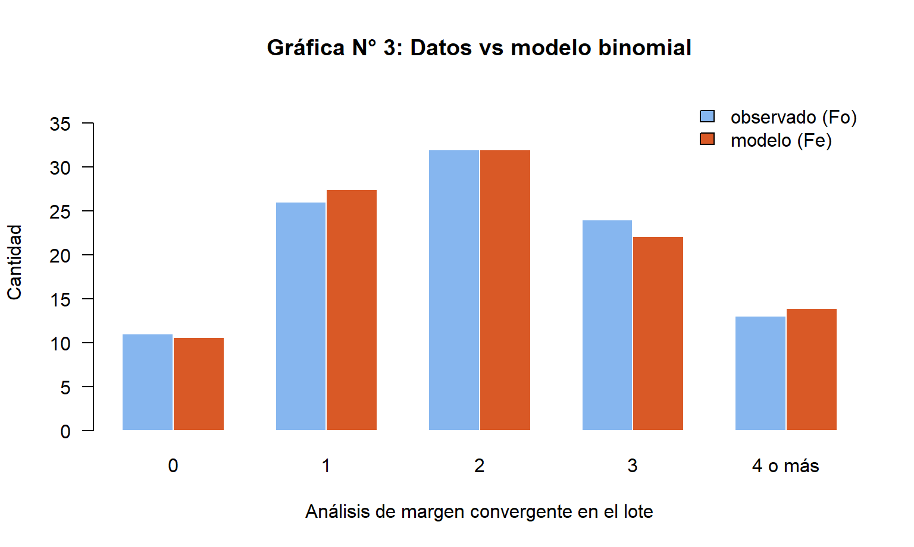
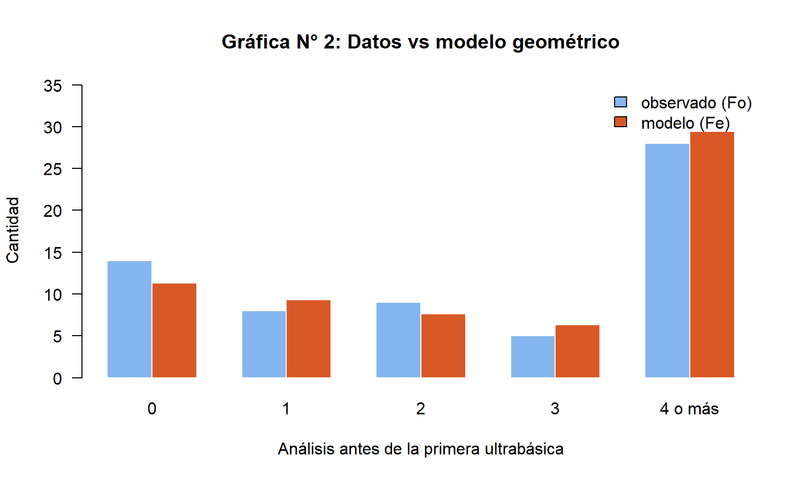
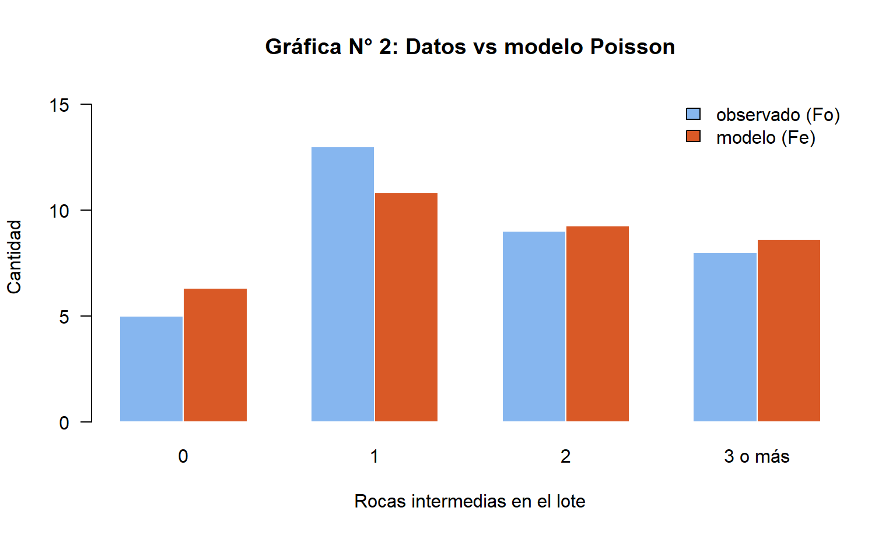
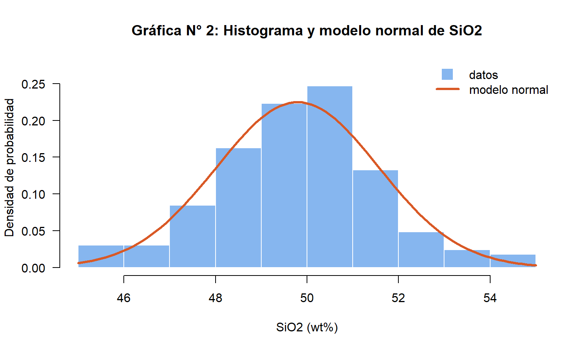
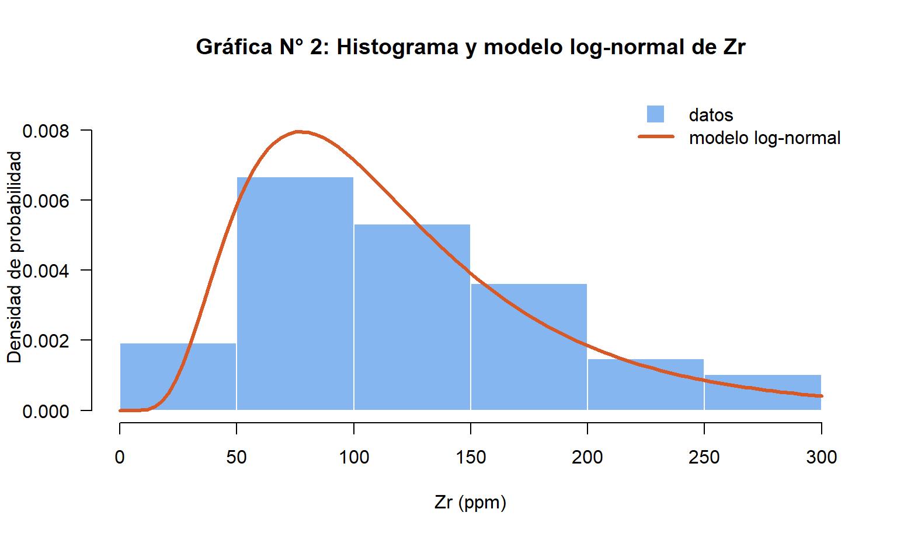
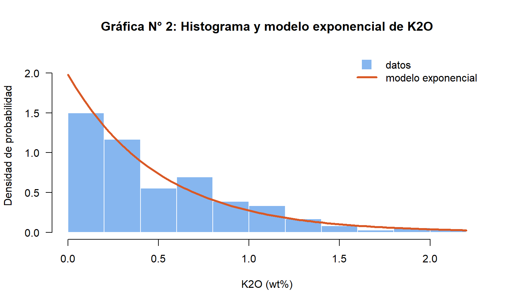

Método
Los mismos pasos para cada variable, como en la plantilla del curso: tabla y gráfica de la distribución, conjetura del modelo, test de aprobación, cálculo de probabilidades, intervalo de confianza y conclusión.
Por qué se trabaja con la muestra aleatoria y no con toda la base
- Con 159.760 datos ningún modelo pasa. El chi-cuadrado crece con el tamaño de la muestra: con la base entera, diferencias mínimas e irrelevantes entre los datos y el modelo bastan para rechazarlo. Por eso la inferencia usa la muestra aleatoria simple de la Lección 3 (n = 1.061, semilla 2026).
- Se separan los tipos de roca. Mezclar basaltos, peridotitas y granitos da histogramas con varios picos que ningún modelo simple describe. Las variables continuas se modelan en un estrato homogéneo: las rocas volcánicas máficas (basaltos).
- Prueba y error, documentado. Se probaron 50 variables químicas con los modelos normal, log-normal y exponencial, y se eligió el modelo que pasa la prueba y tiene sentido geológico. También se registra lo que no funcionó: el número de analitos no sigue un modelo de Poisson (su varianza, 122, es once veces su media, 10,8).
- La población se conoce. Como se tiene la base completa, cada intervalo de confianza se comprueba con el valor real. En los seis modelos, el valor real cae dentro del intervalo.
Resumen de los modelos
Un modelo se acepta cuando el chi-cuadrado calculado es menor que el umbral de la tabla (95 % de confianza).
| Tipo | Variable aleatoria | Modelo | Parámetros | n | χ² | Umbral | Pearson (%) | Intervalo 95 % | Valor real | Documento |
|---|
Modelos discretos
Una variable nominal, una ordinal y una discreta. Los tres modelos cuentan sucesos en ensayos independientes, algo que la muestra aleatoria garantiza porque los análisis se sortearon.

Nominal · binomial
Ambiente tectónico. En lotes de 10 análisis sorteados, X = cuántos son de margen convergente. Es un conteo de éxitos en 10 ensayos con la misma probabilidad: modelo binomial con n = 10 y p = 0,206. χ² = 0,32 frente a un umbral de 9,49. Probabilidad de que un lote tenga 3 o más: 33,9 %. El documento incluye la ley de los grandes números: la proporción acumulada se estabiliza alrededor de 0,21.

Ordinal · geométrico
Clase según SiO2. X = cuántos análisis se revisan antes de encontrar la primera roca ultrabásica: fracasos antes del primer éxito, modelo geométrico con p = 0,176. χ² = 1,41 frente a 9,49. En promedio hay que revisar unos 6 análisis para dar con una ultrabásica, y hay un 62,1 % de probabilidad de encontrarla entre los primeros cinco.

Discreta · Poisson
X = número de rocas volcánicas intermedias (andesitas) en un lote de 30 análisis: un evento poco frecuente, con media 1,71 y varianza parecida, como exige el modelo de Poisson. χ² = 0,77 frente a 7,81. Un lote de 30 sin ninguna andesita tiene probabilidad 18,0 %.
Modelos continuos
Tres variables de los basaltos, cada una con un modelo distinto: un elemento mayor simétrico, un elemento traza con cola larga y un álcali que casi siempre está cerca de cero.

SiO2 · normal
Campana casi simétrica: modelo normal con media 49,79 % y desviación 1,77 %. χ² = 10,32 frente a 16,92; correlación entre observado y esperado de 97,7 %. Probabilidad de que un basalto supere el 51 % de sílice: 24,8 %. El documento muestra también el Teorema del Límite Central con 1.000 muestras de 30 basaltos.

Zr · log-normal
Cola larga a la derecha, típica de los elementos traza: el logaritmo del circonio es normal. Media logarítmica 4,657 y desviación logarítmica 0,556. χ² = 5,93 frente a 11,07. Un basalto supera los 150 ppm de Zr (basaltos enriquecidos de islas oceánicas) con probabilidad 26,3 %.

K2O · exponencial
Máximo junto a cero y caída continua: modelo exponencial con λ = 1,98 (media 0,50 %). χ² = 8,29 frente a 18,31. Un basalto tiene menos de 0,2 % de K2O, como los de dorsal, con probabilidad 32,7 %.
Intervalos de confianza
Por el Teorema del Límite Central, la media de una muestra grande se distribuye normal con error estándar σ/√n. El intervalo del 95 % es media ± 1,96·σ/√n; para proporciones, p ± 1,96·√(p(1−p)/n).
Izquierda: las medias de 1.000 muestras de 30 basaltos forman una campana normal, con la desviación que predice el teorema (σ/√30). Derecha: el intervalo del 95 % para la media de SiO2 en basaltos, calculado con la muestra, contiene la media real de la base completa (49,26 %). La tabla del resumen muestra la misma comprobación para los seis modelos.